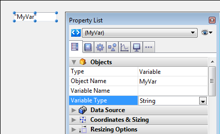

Concepts/_removed_usenduse_variables
Use...End use
The formal syntax of the Use...End use structure is:
Use(Shared_object_or_Shared_collection)
statement(s)
End use
The Use...End use structure defines a sequence of statements that will execute tasks on the Shared_object_or_Shared_collection parameter under the protection of an internal semaphore. Shared_object_or_Shared_collection can be any valid shared object or shared collection.
Shared objects and shared collections are designed to allow communication between processes, in particular, preemptive 4D processes. They can be passed by reference as parameters from a process to another one. For detailed information on shared objects or shared collections, refer to the Shared objects and shared collections page. Surrounding modifications on shared objects or shared collections by the Use...End use keywords is mandatory to prevent concurrent access between processes.
- Once the Use line is successfully executed, all Shared_object_or_Shared_collection properties/elements are locked for all other process in write access until the corresponding
End useline is executed. - The statement(s) sequence can execute any modification on the Shared_object_or_Shared_collection properties/elements without risk of concurrent access.
- If another shared object or collection is added as a property of the Shared_object_or_Shared_collection parameter, they become connected within the same shared group (see Using shared objects or collections).
- If another process tries to access one of the Shared_object_or_Shared_collection properties or connected properties while a Use...End use sequence is being executed, it is automatically put on hold and waits until the current sequence is terminated.
- The End use line unlocks the Shared_object_or_Shared_collection properties and all objects sharing the same locking identifier.
- Several Use...End use structures can be nested in the 4D code. In that case, all locks are stacked and properties/elements will be released only when the last End use call is executed.
Note: If a collection method modifies a shared collection, an internal Use is automatically called for this shared collection while the function is executed.
Form Object Variables
In the Form editor, each active object—button, radio button, check box, scrollable area, meter bar, and so on—is identified by an object name and is automatically associated with a variable (or expression). By default, the variable is not defined when the object is created: it will be created dynamically when the form is loaded (see below). You can, if you want, name the variable in the Property List to create it. For example, if you create a button named MyButton, you can associated it with a MyButton variable (you can also use the same name as the object).
The form object variables allow you to control and monitor the objects. For example, when a button is clicked, its variable is set to 1; at all other times, it is 0. The variable associated with a meter or dial lets you read and change the current setting. For example, if you drag a meter to a new setting, the value of the variable changes to reflect the new setting. Similarly, if a method changes the value of the variable, the meter is redrawn to show the new value.
For more information about variables and forms, see the 4D Design Reference Manual as well as the chapter Form Events.
Dynamic variables
You can leave it up to 4D to create variables associated with your form objects (buttons, enterable variables, check boxes, etc.) dynamically and according to your needs. To do this, simply leave the "Variable Name" field blank in the Property list for the object:

When a variable is not named, when the form is loaded, 4D creates a new variable for the object, with a calculated name that is unique in the space of the process variables of the interpreter (which means that this mechanism can be used even in compiled mode). This temporary variable will be destroyed when the form is closed. In order for this principle to work in compiled mode, it is imperative that dynamic variables are explicitly typed. There are two ways to do this:
- You can set the type using the "Variable Type" menu of the Property list. Note: When the variable is named, the "Variable Type" menu does not actually type the variable but simply allows the options of the Property list to be updated (except for picture variables). In order to type a named variable, it is necessary to use the commands of the Compiler theme.
- You can use a specific initialization code when the form is loaded that uses, for example, the
VARIABLE TO VARIABLEcommand:
If(Form event=On Load)
C_TEXT($init)
$Ptr_object:=OBJECT Get pointer(Object named;"comments")
$init:=""
VARIABLE TO VARIABLE(Current process;$Ptr_object->;$init)
End if
Note: If you specify a dynamic variable, select the value None in the "Variable Type" menu, and do not use initialization code, a typing error will be returned by the compiler.
In the 4D code, dynamic variables can be accessed using a pointer obtained with the OBJECT Get pointer command. For example:
// assign the time 12:00:00 to the variable for the "tstart" object
$p:=OBJECT Get pointer(Object named;"tstart")
$p->:=?12:00:00?
There are two advantages with this mechanism:
- On the one hand, it allows the development of "subform" type components that can be used several times in the same host form. Let us take as an example the case of a datepicker subform that is inserted twice in a host form to set a start date and an end date. This subform will use objects for choosing the date of the month and the year. It will be necessary for these objects to work with different variables for the start date and the end date. Letting 4D create their variable with a unique name is a way of resolving this difficulty.
- On the other hand, it can be used to limit memory usage. In fact, form objects only work with process or inter-process variables. However, in compiled mode, an instance of each process variable is created in all the processes, including the server processes. This instance takes up memory, even when the form is not used during the session. Therefore, letting 4D create variables dynamically when loading the forms can economize memory.
Note: When there is no variable name, the object name is shown in quotation marks in the form editor (when the object display a variable name by default).
Investigating errors
Errors often happen in specific contexts and/or following a particular sequence of events. Getting and analyzing detailed log files is usually an efficient way to understand and fix those errors.
4D provides several log files:
- 4DRequestsLog.txt: records standard requests carried out by the 4D Server machine or the 4D remote machine that executed the command (excluding Web requests).
- 4DRequestsLog_ProcessInfo.txt: records information on each process created on the 4D Server machine or the 4D remote machine that executed the command (excluding Web requests).
- 4DDebugLog.txt: records each event occurring at the 4D programming level.
- HTTPDebugLog.txt: records each HTTP request and each response in raw mode.
All log files share the same sequential operation numbers so that each log entry can be linked to other entries in other logs.
Log files can be enabled and disabled at any moment using the SET DATABASE PARAMETER or WEB SET OPTION commands.